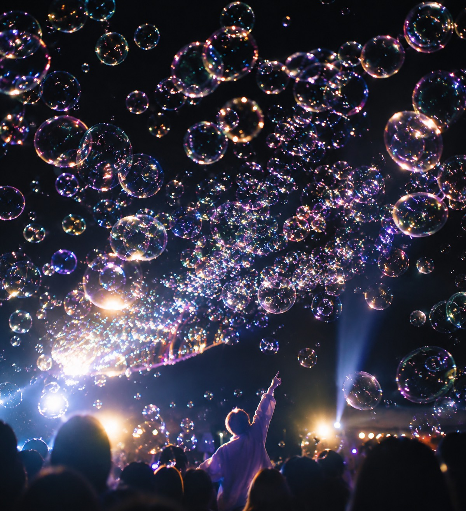
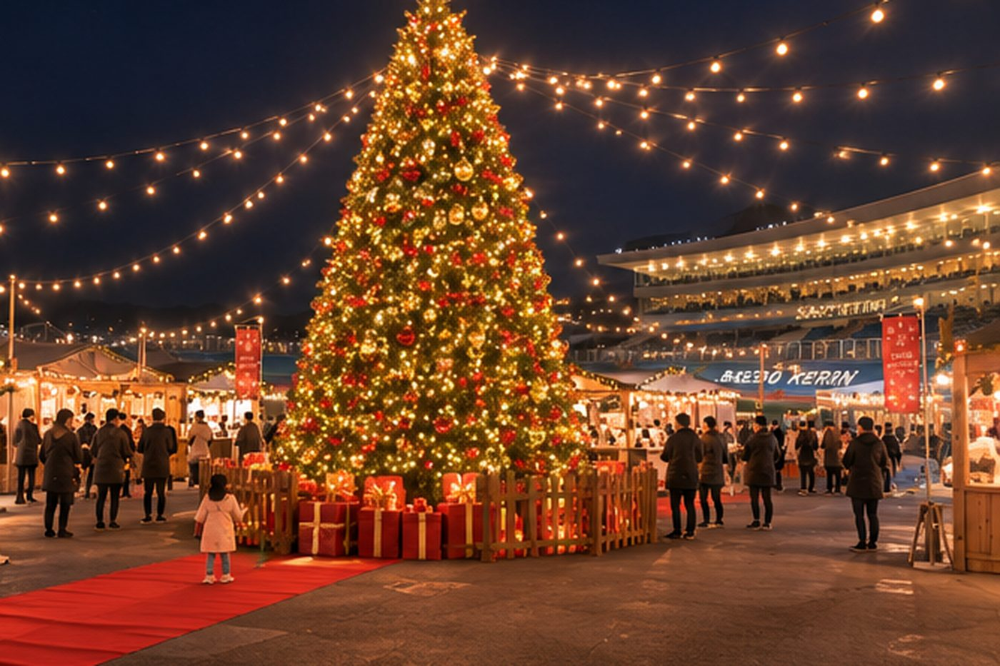

01 / Night Bubbles
シャボン玉 ×
ライトアップ
灯りの入った会場にシャボン玉を飛ばし、光を受けて色が変わる様子を楽しむ企画です。日没後、音楽に合わせた10〜15分ほどのショーを考えています。
大きなステージをつくるのではなく、会場の照明を生かした演出に。歩いている途中でも、立ち止まって眺められる場所を目指します。
出演者・実施時刻・観覧場所は未定です。

About
初年度の方針と、この企画で目指していることをまとめました。
背景
佐世保の冬の終わりは、人が外へ出る機会が少なくなります。年度の変わり目までのあいだ、 まちなかへ足を運ぶきっかけが多くありません。
この時期に一日だけ、朝から夜まで人が集まる場所をつくります。既存のイベントと競合させるつもりはありません。 この時期の人の流れをもう一段つくること。目的はそこにあります。

計画上の目標値です。実績は開催後に「開催後レポート」として公開します。
方針
予算を広げて派手にするほうが簡単ですが、それでは一年で終わります。初年度は、やらないことから決めました。
企画中
買い物や食事の合間に、足を止めて楽しめる時間をつくります。

01 / Night Bubbles
灯りの入った会場にシャボン玉を飛ばし、光を受けて色が変わる様子を楽しむ企画です。日没後、音楽に合わせた10〜15分ほどのショーを考えています。
大きなステージをつくるのではなく、会場の照明を生かした演出に。歩いている途中でも、立ち止まって眺められる場所を目指します。
出演者・実施時刻・観覧場所は未定です。

02 / Mini Theater
小型のバルーンスクリーンで映像を上映する、20〜50人ほどが入れ替わりで楽しむ映画館を計画しています。買い物の合間に、座ってひと息つける場所に。
映像に光が入り込まないよう、シャボン玉の演出とは時間と場所を分ける予定です。
上映作品・上映時間・料金は未定です。人数は計画上の目安です。

03 / Oyster Booth
飲食エリアには、牡蠣を味わうブースも計画しています。キッチンカーやマルシェと一緒に、食べ歩きの楽しみを増やします。
出店者・産地・メニュー・価格は未定です。
いずれも企画段階です。実施内容は変更になる場合があります。
位置づけ
入場を無料にするのは、幅広い世代に来ていただくためです。事業者から見れば、販売の機会が一日増えることになります。
リニューアル後の施設を、競輪の来場者以外にも知っていただく日にします。ふだん立ち入らない層が施設に入ることに価値があると考えています。
ロゴの掲出にとどまらず、地域貢献の取り組みとしてご活用いただけます。開催後には来場者数と内訳をまとめた実績レポートをお渡しします。
出店料、有料観覧席、協賛の三本で運営します。初年度から赤字を前提にはしません。花火の200万円は、観覧席の商品化と協賛でまかないます。
佐世保
佐世保は長崎県北部の中心都市です。基地のまち、造船のまちとして知られ、市外・県外からの来訪も多い一方、この時期は人の動きが落ち着きます。
概要
| 名称 | ないとマーケット（仮称） |
|---|---|
| 日程 | 2027年3月（未定） |
| 時間 | 11:00 - 20:30 |
| 花火 | 20:00 頃（未定） |
| 会場 | 佐世保競輪場（未定） |
| 入場料 | 入場無料／花火の正面観覧席のみ有料 |
| 出店 | あわせて27店を予定 |
| 主催 | 未定 |
| お問い合わせ | 未定 |
体制
主催・後援